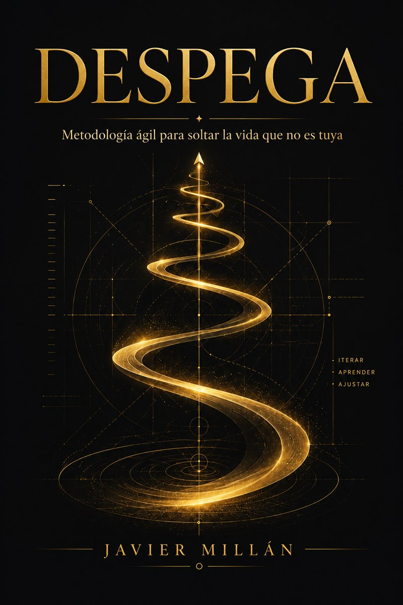

El libro
El método completo, para leer a tu ritmo. Con el cuaderno de trabajo.
MAPEAtu punto de partida
Un método ágil para dejar de sostener lo que ya no te corresponde y construir, por pasos, la versión de ti que sí elegiste.
DESCUBREtu realidad
Vas en un barco a media agua. Levantas la cabeza y no reconoces nada: la rutina te jaló otra vez al piloto automático y no te diste cuenta de cuándo. Despertar no es bonito — es un susto. Pero es el único lugar desde donde se puede trazar una ruta.
¿Qué frase te llevas repitiendo tanto que ya ni la escuchas?
4 ejercicios en el libro
ENVÍA CALMAa tu cuerpo
Un sistema nervioso encendido no razona: reacciona. Si decides así, no decides tú — decide el personaje viejo, el que se formó cuando eras chiquito y nunca actualizó su información. Por eso este paso va antes que soltar nada.
¿Cuándo fue la última vez que tu cuerpo se rindió, aunque por fuera seguías funcionando normal?
2 ejercicios en el libro
SELECCIONAtus tesoros
Hay cosas que drenan y valen: el gimnasio cuesta, una conversación difícil cuesta. De lo que hablamos es de lo otro — lo que sostienes por costumbre, por culpa, o porque llevas tanto con eso que ya ni te preguntas por qué sigue ahí.
Si imaginas soltar eso que ya sabes, ¿qué sientes primero: miedo, o alivio?
4 ejercicios en el libro
PLANIFICAtu ruta
Hace falta un destino. Aquí escribes a tu súper tú — la mejor versión posible de ti, en presente. No «algún día seré». Se escribe «soy», porque tu subconsciente lee el futuro como que todavía no.
Si dejaras de tenerle miedo al ridículo por un día completo, ¿qué harías distinto?
4 ejercicios en el libro
EJECUTAcon foco
Grabar un audio no tiene a nadie escuchando todavía. Puedes borrarlo, repetirlo, y nadie se entera. Ahí está la prueba de que el problema nunca fue la otra persona.
¿Cuál es tu versión del audio de WhatsApp — esa cosa chiquita que llevas evitando aunque a nadie del otro lado le costaría nada?
2 ejercicios en el libro
GUARDAaprendizajes
Cuando por fin conectas uno con otro, ves algo que llevabas toda la vida sin ver: no tendrías ese sueño si no hubieras tenido esa herida. Ahí el trauma deja de ser una piedra y se vuelve el origen de algo.
lo que dolió
lo que quieres
Si conectaras tu sueño más grande con la herida de la que salió, ¿qué verías que no habías querido ver?
2 ejercicios en el libro
AJUSTAa tu rumbo
Es el mismo jalón hacia atrás en la orilla de un risco que frente a un teléfono. No se quita antes de saltar: se quita después, y solo si saltas. Por eso ajustar es el paso más difícil — casi siempre implica soltar algo que te costó construir.
¿Qué ya decidiste que tu cuerpo todavía no se cree?
2 ejercicios en el libro
DISEÑAel libro
El libro trae el método completo y el cuaderno de trabajo trae los veinte ejercicios con su mismo código, para saltar de uno a otro sin buscar.
No tienes que hacerlos en orden ni todos de una vez. El que te llame hoy es el que te toca. Los renglones son una sugerencia, no un límite.

REFLEXIONAhacia dónde va
DESPEGA empezó como libro porque era lo que yo necesitaba cuando empecé. Pero el método se trabaja mejor acompañado, y hacia allá va.
El método completo, para leer a tu ritmo. Con el cuaderno de trabajo.
Los siete pasos en semanas, en grupo, con fecha de revisión real.
El método contado en vivo, para equipos y comunidades.
ESTO NO SE ACABA AQUÍtu umbral
Si llegaste hasta aquí leyendo, ya sabes que no fue por curiosidad. Fue porque algo de esto te encontró a ti primero.
Javier Millán · una constelación de La Red de Luz